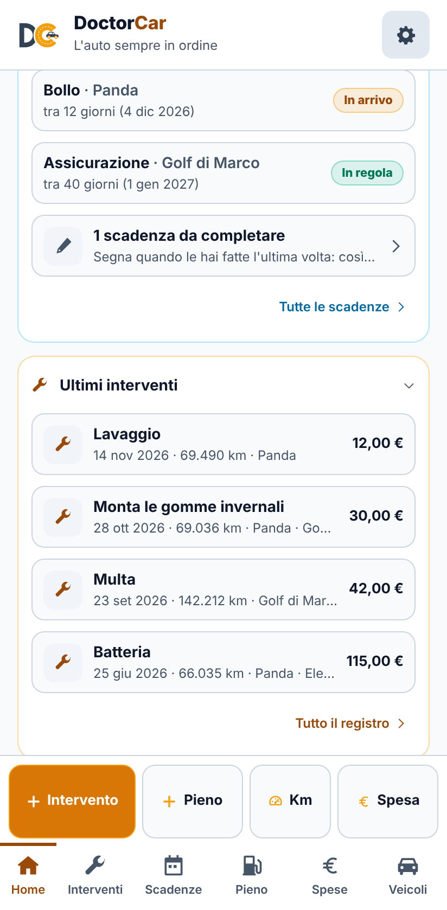
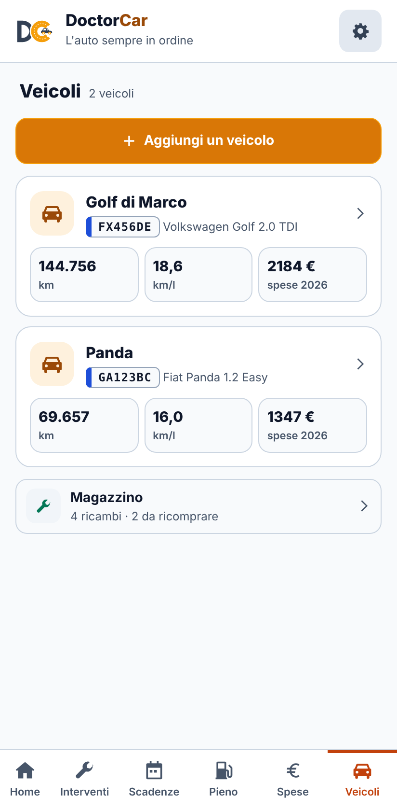
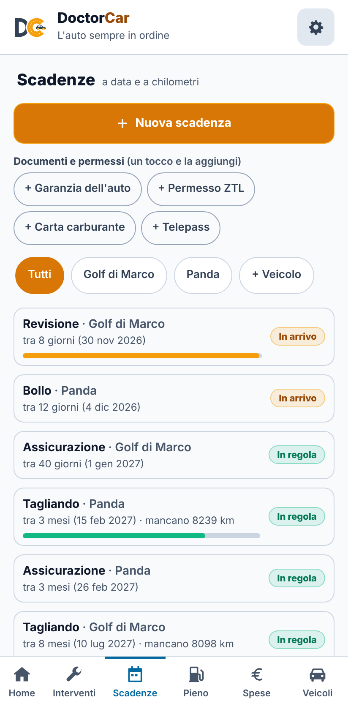
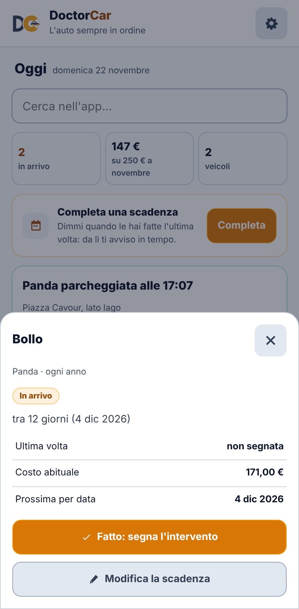
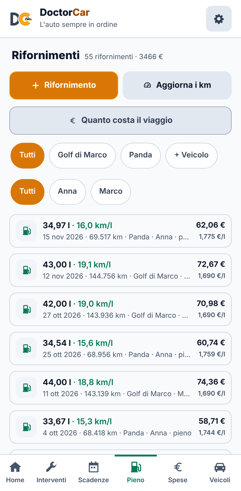
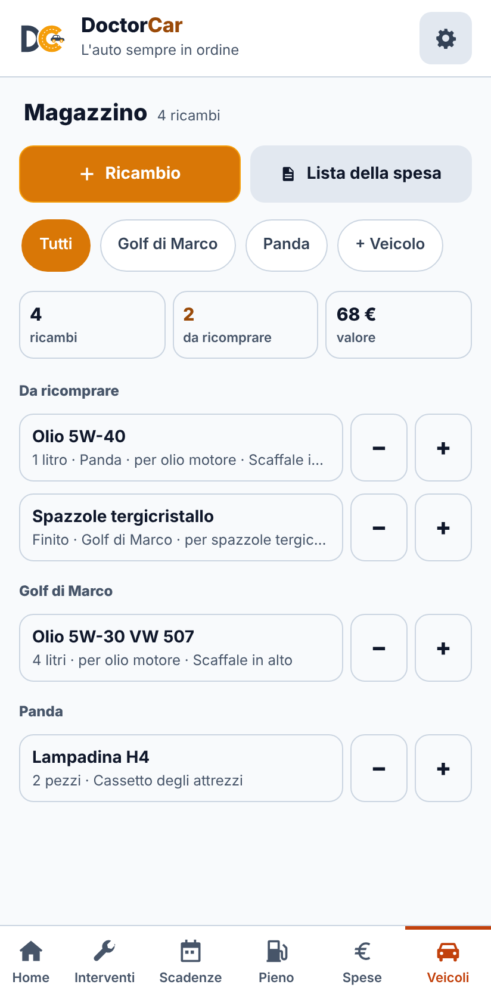
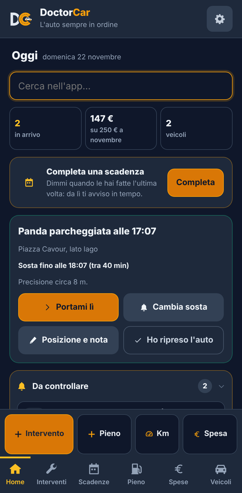

DoctorCar
L'auto sempre in ordine
Guida all'uso
Versione dell'app: {{VERSIONE}} · guida aggiornata il {{DATA}}
DoctorCar è il libretto di manutenzione dell'auto sul telefono. Tiene in ordine gli interventi (tagliandi, freni, gomme…), le scadenze (revisione, bollo, assicurazione, patente…), i rifornimenti con i consumi veri e tutte le spese. Ti avvisa prima che qualcosa scada e ti ricorda dove hai parcheggiato.
Funziona senza internet: i dati restano sul tuo telefono, senza account e senza cloud. Se in famiglia usate più telefoni, DoctorCar li tiene allineati da solo nella Wi‑Fi di casa. Esiste anche come pagina da aprire sul computer.


In cima c'è la ricerca («Cerca nell'app…») e tre riquadri a colpo d'occhio: scadenze (scadute o in arrivo), quanto hai speso questo mese rispetto al budget, i km o i veicoli. Toccandoli si apre la sezione.
Poi una sola azione consigliata (per esempio «Completa una scadenza») con il suo tasto, il parcheggio, il blocco Da controllare quando qualcosa non torna (km più bassi di prima, consumo anomalo, budget superato, copia di sicurezza vecchia), le scadenze vicine, gli ultimi interventi e le tue auto con km, consumo e spese.
In basso, solo in Home, la barra + Intervento · + Pieno · Km · Spesa; più giù le sezioni: Home, Interventi, Scadenze, Pieno, Spese, Veicoli.

Scrivi nella ricerca in Home quello che ti serve, con parole tue: «gomme», «bollo», «backup», «multa», «tema scuro», la targa o il nome di un'officina. Trovi funzioni, impostazioni, auto, scadenze e interventi; un tocco ti porta lì.
Non servono accenti né la parola intera: «revis» trova la revisione.
Al primo avvio DoctorCar propone Aggiungi la tua auto. Puoi aggiungerne quante vuoi (auto o moto) dalla sezione Veicoli.

Per ogni veicolo: nome, marca, modello, targa (sempre in maiuscolo), alimentazione, prima immatricolazione e km attuali. Tutto è facoltativo tranne il tipo.
Nella stessa finestra scrivi subito le cose importanti: assicurazione (scadenza e costo), bollo, ultima revisione, ultimo tagliando e se usi le gomme invernali. Così le scadenze nascono già complete, senza secondi passaggi.
Per l'auto nuova DoctorCar propone un piano di manutenzione di base (tagliando, filtri, freni, distribuzione…) con gli intervalli consigliati.


Toccando un veicolo si apre la sua scheda: km attuali, km l'anno, consumo medio, spese registrate, il grafico del consumo (in rosso i pieni anomali), le gomme, le scadenze e gli ultimi interventi.
Dalla scheda: Intervento, Scadenza, Treno di gomme, Controlli veloci, Libretto in PDF, Per l'officina, Modifica il veicolo, Elimina il veicolo.


Il registro raccoglie tutto quello che è stato fatto all'auto, raggruppato per anno, con la ricerca (officina, voce, descrizione) e i filtri per veicolo e per persona.
Un intervento ha: veicolo, data, km, cosa è stato fatto (anche più voci insieme: tagliando, olio, filtri, freni, gomme, batteria, revisione, bollo…), officina, costo e note.
Meno tocchi: i km sono già stimati dal tuo uso dell'auto, officina e costo dell'ultima volta sono proposti, e «Come l'ultima volta» compila tutto in un tocco.
Ogni intervento può avere fino a 12 foto: fattura, scontrino, preventivo dell'officina. Nell'app tocchi Scatta foto o Scegli foto. Le foto vengono ridotte, restano sul telefono, si guardano a schermo intero con lo zoom e viaggiano (cifrate) sugli altri telefoni collegati e nella copia di sicurezza.


Le scadenze sono a data, a chilometri o tutte e due («quello che arriva prima»). Ognuna ha un colore: scaduta, in arrivo (entro 30 giorni o 1.000 km), in regola, da completare (manca l'ultima volta).
Con i km aggiornati ogni tanto, DoctorCar stima la data anche delle scadenze a chilometri.
Dalla scadenza: Fatto: segna l'intervento (apre l'intervento già compilato), Modifica la scadenza, Aggiungi al calendario.
In cima alla sezione Scadenze, con un tocco aggiungi: patente, carta carburante, Telepass (tuoi) e garanzia, permesso ZTL (dell'auto). Quando li segni come fatti, DoctorCar chiede la nuova data. La multa da pagare diventa una scadenza che non si ripete.


Ogni rifornimento ha data, km, quantità (litri, kWh o kg), prezzo, importo e «pieno». Di litri, prezzo al litro e importo ne scrivi due: il terzo si calcola. Il prezzo dell'ultimo pieno è già proposto.
Fra due pieni DoctorCar calcola il consumo vero (km/l e l/100 km) e il prezzo medio. I pieni con un consumo molto peggiore del solito sono segnalati.
Aggiorna i km (o «Km» in Home) serve a segnare i chilometri senza fare il pieno: tiene giuste le stime.


La sezione Spese mostra il totale dell'anno, il costo al chilometro e il grafico mese per mese: manutenzione, carburante, bollo/assicurazione/revisione, altro. Si filtra per veicolo e per anno.
Il budget del mese (Imposta il budget) mostra quanto hai speso, la stima a fine mese e avvisa se lo superi.
La previsione dei prossimi 12 mesi somma le scadenze in arrivo (con il costo dell'ultima volta) e il carburante.
Spesa in Home registra al volo pedaggio, parcheggio, lavaggio o multa: se non è ancora pagata diventa un promemoria entro 5 giorni con lo sconto del 30% già calcolato.

Storico delle gomme: treni estivi, invernali o 4 stagioni, con misura, marca e DOT (settimana e anno di fabbricazione). I km si contano da soli, l'età viene dal DOT e DoctorCar avvisa oltre i 6 anni o i km consigliati.
Segnando il cambio stagionale («Monta le gomme invernali», «Togli le gomme invernali») le gomme si scambiano da sole: quelle montate vanno in garage e viceversa.
I Controlli veloci (pressione, battistrada, olio, refrigerante, lavavetri, luci, tergicristalli) si fanno in 2 minuti, una volta al mese: con gli avvisi accesi DoctorCar li ricorda il 15 e dalla notifica rispondi «Tutto a posto».
Tocca Ho parcheggiato qui in Home: la schermata «Dove sei» mostra indirizzo, precisione e coordinate. Aggiorna la posizione cerca per qualche secondo una lettura più precisa e la tiene solo se è migliore, Vedi sulla mappa la controlla. Puoi aggiungere una nota (piano, colonna, via).
Poi in Home: Portami lì apre le mappe, Sosta a tempo avvisa 10 minuti prima e alla scadenza del parcheggio, Ho ripreso l'auto chiude tutto.
Se la posizione del telefono è spenta, DoctorCar propone di accenderla; se il permesso è stato negato, spiega come darlo. Il punto resta solo sul tuo telefono.


Da far vedere al meccanico: nella scheda dell'auto segni un rumore, una spia, una cosa strana con «Cosa da far vedere». Anche quello che scrivi in «Qualcosa da sistemare?» dei controlli veloci finisce qui. La lista va nel foglio Per l'officina, così il meccanico la riceve insieme alla storia dell'auto. Toccando una riga la segni «Sistemato» o la togli.
Ricambi in garage: ogni ricambio (olio, lampadine, spazzole…) appartiene a un'auto e sta nella sua scheda. Con − e + li conti; se scrivi «Avvisami quando ne restano», sotto quel numero compare Da ricomprare e un avviso in Home. Puoi segnare anche il prezzo per unità e dove si trova (es. «scaffale in garage»).
Magazzino: in Veicoli tocca Magazzino per vedere tutti i ricambi insieme, filtrarli per auto o per «Da ricomprare» e sapere quanto valgono. Lista della spesa prepara il testo con quello che manca, da mandare o copiare.
Già che ci sei: dopo aver segnato un intervento, DoctorCar chiede quali cose della lista sono state sistemate e quanti ricambi di quell'auto, collegati a quel lavoro, hai usato. Se non c'è niente da chiedere, non chiede.


Quanto costa il viaggio (in Pieno, o cercando «viaggio»): scrivi i km, quante persone, se è andata e ritorno e i pedaggi. Consumo e prezzo li prende dai tuoi pieni (puoi cambiarli). Risponde con il totale, i litri e quanto spende ognuno.
Nell'app Android, DoctorCar manda notifiche prima di tagliando, revisione, bollo, assicurazione e delle altre scadenze, anche con l'app chiusa e dopo il riavvio del telefono.
La prima volta DoctorCar chiede una sola volta se vuoi gli avvisi; da Impostazioni → Avvisi si cambiano o si spengono.
Nell'app Android i dati possono stare uguali su più telefoni e tablet (per esempio i tuoi e quelli della famiglia). I telefoni si parlano direttamente nella stessa Wi‑Fi, con un collegamento cifrato, senza cloud e senza account.
Da Sincronizzazione vedi i dispositivi collegati, puoi Sincronizza ora, Dimentica un telefono (perso o venduto) o Scollega questo.


| Cosa succede | Cosa fare |
|---|---|
| Non arrivano gli avvisi | Impostazioni → Avvisi: controlla che siano accesi; se Android li ha bloccati tocca «Apri le impostazioni di Android» e permetti le notifiche. Togli DoctorCar dal risparmio energetico. |
| Una scadenza dice «Da completare» | Manca l'ultima volta: toccala e scrivi quando l'hai fatta (o segna l'intervento). |
| La data stimata di una scadenza a km è strana | Aggiorna i km ogni tanto («Km» in Home): la stima usa i km letti in date diverse. |
| In Home «km più bassi di prima» | Hai scritto un numero sbagliato: apri l'ultimo rifornimento o intervento e correggi i km. |
| Due telefoni non si allineano | Stessa Wi‑Fi (non quella ospiti), app aperta su tutti e due, poi «Sincronizza ora». |
| La posizione del parcheggio non si trova | Accendi la posizione del telefono e dai il permesso a DoctorCar; all'aperto è più precisa. |
| La copia non si apre | Controlla la password (maiuscole e minuscole contano). |
| Qualcos'altro non va, o hai un'idea | Impostazioni → Segnala un problema o un'idea (o scrivi «segnala» nella ricerca). |
| Versione | Cosa c'è di nuovo |
|---|---|
| 2.4 | App anche in inglese (Impostazioni → Aspetto → Lingua), aggiornamenti controllati una volta a settimana (Impostazioni → Aggiornamenti), consumo del viaggio in km/l o l/100 km, unità dei ricambi da scegliere, segnalazioni a crslabs.info@gmail.com, «Sostieni DoctorCar». |
| 2.3 | Lista «Da far vedere al meccanico» (anche nel foglio per l'officina), ricambi in garage per ogni auto con «Da ricomprare», Magazzino con lista della spesa, «Già che ci sei» dopo un intervento, quanto costa il viaggio. |
| 2.2.5 | Parcheggio: la finestra non si ridisegna più (niente sfarfallio); la posizione si migliora solo toccando «Aggiorna la posizione» e cambia solo se la nuova lettura è più precisa. |
| 2.2.4 | Al chiuso la posizione si ferma di affinare appena smette di migliorare: pochi secondi invece di mezzo minuto. |
| 2.2.3 | Posizione del parcheggio precisa come in Mappe: si usa la posizione combinata di Android alla massima precisione, insieme a GPS e rete, per 45 secondi; la precisione migliora sotto i tuoi occhi. |
| 2.2.2 | Parcheggio: la posizione compare subito e intanto il GPS la rende più precisa da solo; se hai dato solo la posizione approssimativa, l'app spiega come dare quella precisa. |
| 2.2.1 | Indietro durante la ricerca svuota la ricerca (non chiude più l'app); sezioni e finestre ripartono sempre dall'alto; Home a due colonne sui tablet; posizione del parcheggio trovata anche con il GPS appena acceso. |
| 2.2 | Home riorganizzata: ricerca in tutta l'app, riquadri a colpo d'occhio, «Da controllare». Segnalazione di problemi e idee, menu che ripartono dall'alto, Impostazioni sempre chiuse all'apertura, vibrazione dei tocchi più leggera, cambio di tema morbido. |
| 2.1 | Bollo proposto, tolleranza dell'assicurazione, revisione a fine mese, documenti e permessi, controlli veloci, grafico del consumo, storico delle gomme con scambio automatico, budget, spese veloci e multa con lo sconto, dove ho parcheggiato e sosta a tempo. |
| 2.0 | Meno tocchi (valori già pronti, «Come l'ultima volta», litri/prezzo/importo), azione consigliata e avvisi in Home, previsione delle spese, tasti nelle notifiche, scorciatoie e widget, calendario, importazione da altre app, libretto in PDF e foglio per l'officina, copia automatica, «chi». |
| 1.3 | Accesso con impronta o PIN. |
| 1.2 | Apertura con il logo, dimensione del testo, fluidità dello schermo, vibrazione regolabile. |
| 1.1 | Foto delle fatture, avvisi sulle scadenze. |
| 1.0 | Veicoli, interventi, scadenze, rifornimenti, spese, copia cifrata, sincronizzazione tra telefoni. |